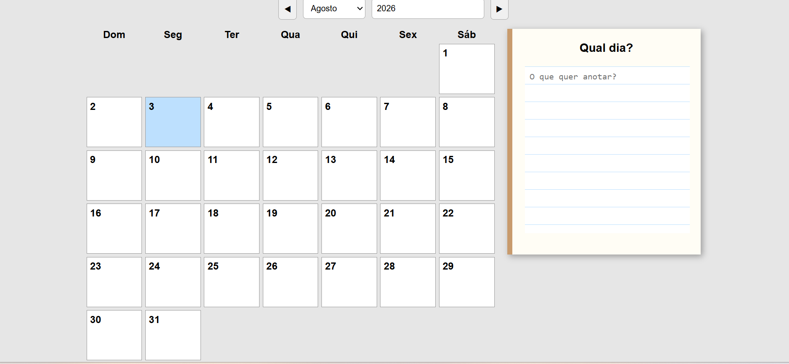
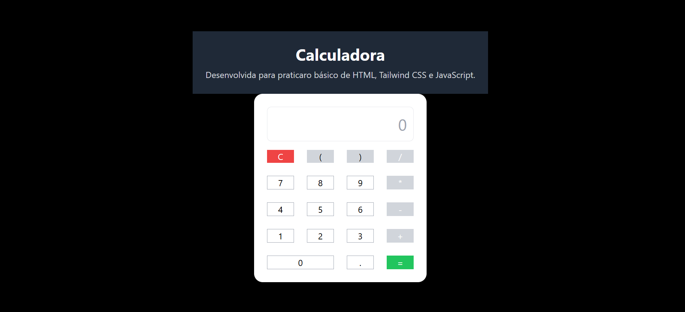
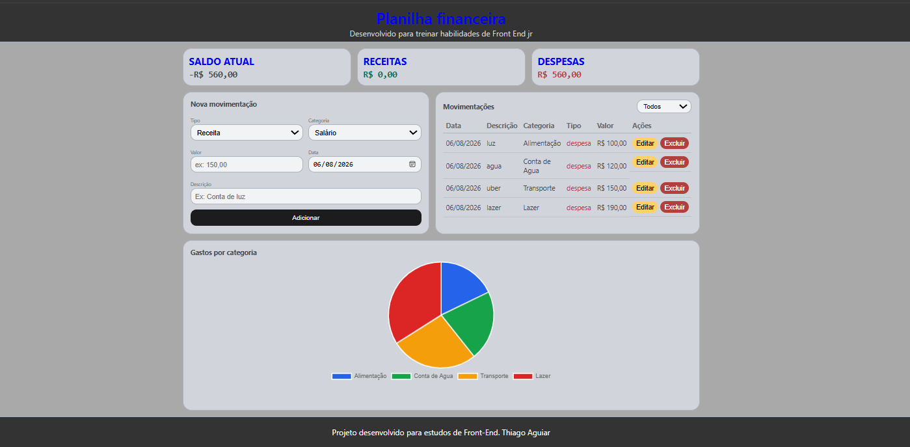
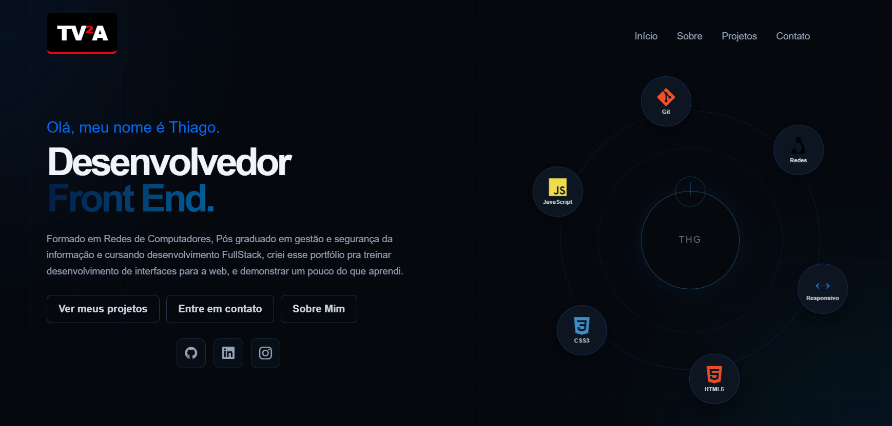

Agenda Web
Aplicação web para organização de compromissos, com interface responsiva e interação dinâmica utilizando JavaScript.
HTML
CSS
JavaScript
Ver projeto →
Olá, meu nome é Thiago.
Profissional de infraestrutura formado em Redes de Computadores, Pós graduado em gestão e segurança da informação e cursando desenvolvimento FullStack, em transição para desenvolvimento de software utilizando ferramentas de IA para construir aplicações, automatizações e soluções digitais.
Minha trajetória começou em infraestrutura, onde desenvolvi experiência na administração de ambientes, troubleshooting, automação e resolução de problemas técnicos. Comecei a direcionar meu foco para desenvolvimento de software e Inteligência Artificial.Hoje utilizo uma abordagem AI-Native, combinando conhecimento de infraestrutura com ferramentas de desenvolvimento assistido por IA para transformar ideias em aplicações funcionais. Meu objetivo é atuar na interseção entre software, infraestrutura, automação e IA, criando soluções práticas e colocando produtos em funcionamento rapidamente.

Aplicação web para organização de compromissos, com interface responsiva e interação dinâmica utilizando JavaScript.

Calculadora desenvolvida para praticar lógica de programação e manipulação do DOM.

Aplicação para gerenciamento de receitas e despesas, desenvolvida para transformar um processo manual em uma experiência simples de acompanhamento financeiro.

Aplicação para gerenciamento de tarefas, permitindo adicionar, organizar e remover atividades por meio de uma interface dinâmica.
Página institucional desenvolvida para praticar estruturação e criação de layouts responsivos.

Desenvolvida para centralizar meus projetos como portfólio.
Estou aberto a falar sobre projetos, oportunidades ou experiências de vida.
Enviar mensagem